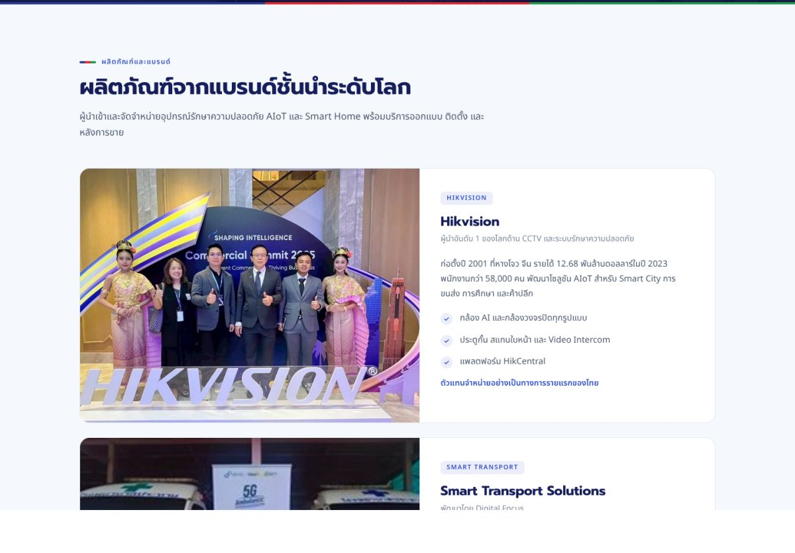
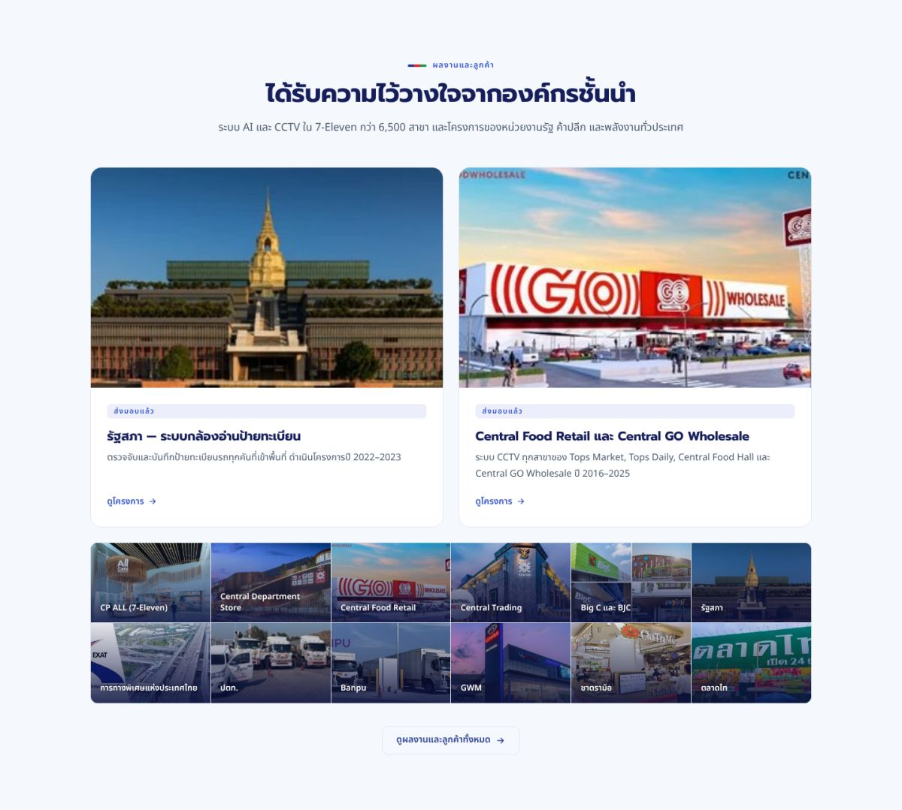

<title>Digital Focus เว็บใหม่เทียบเว็บเดิม</title>
<meta name="claude:viewport-fit-sides" content="cover">
<link rel="preconnect" href="https://fonts.googleapis.com">
<link rel="preconnect" href="https://fonts.gstatic.com" crossorigin>
<link href="https://fonts.googleapis.com/css2?family=Prompt:wght@500;600;700&family=Noto+Sans+Thai:wght@400;500;600&display=swap" rel="stylesheet">
<style>
/* Layout: an executive before/after review. Narrow reading column for verdicts, full-width paired screenshots (old left, new right) for each part of the site, a scored table, then what the old site still does better and the next steps. Digital Focus logo colours mark old (muted red) and new (green). */
:root{
  --bg:#f6f7fb; --surface:#ffffff; --ink:#151a3a; --muted:#5b6283; --line:#e1e4ef;
  --indigo:#283c96; --indigo-soft:#e9ecfa; --old:#c2392f; --old-soft:#fbeceb; --new:#1d8a46; --new-soft:#e6f5ec; --amber:#a86a00; --amber-soft:#fdf2dc;
  --display:"Prompt","Noto Sans Thai",system-ui,sans-serif;
  --body:"Noto Sans Thai","Prompt",system-ui,sans-serif;
}
@media (prefers-color-scheme: dark){:root:not([data-theme="light"]){
  --bg:#0e1230; --surface:#161b42; --ink:#eceffd; --muted:#a6adcf; --line:#2a3166;
  --indigo:#9aaaff; --indigo-soft:#232a63; --old:#ff8a80; --old-soft:#3a1d2a; --new:#5fd690; --new-soft:#173a2a; --amber:#f4c063; --amber-soft:#3a2f17; color-scheme:dark}}
:root[data-theme="dark"]{
  --bg:#0e1230; --surface:#161b42; --ink:#eceffd; --muted:#a6adcf; --line:#2a3166;
  --indigo:#9aaaff; --indigo-soft:#232a63; --old:#ff8a80; --old-soft:#3a1d2a; --new:#5fd690; --new-soft:#173a2a; --amber:#f4c063; --amber-soft:#3a2f17; color-scheme:dark}

*{box-sizing:border-box}
body{background:var(--bg);color:var(--ink);font:16px/1.75 var(--body);margin:0}
h1,h2,h3{font-family:var(--display);line-height:1.25;margin:0;text-wrap:balance}
p{margin:0}
a{color:var(--indigo)}
img{display:block;max-width:100%;height:auto}
.wrap{max-width:1180px;margin:0 auto;padding-inline:max(16px,env(safe-area-inset-left,0px)) max(16px,env(safe-area-inset-right,0px))}
.narrow{max-width:760px}
section{padding-block:56px}
.tri{display:block;width:44px;height:5px;border-radius:3px;background:linear-gradient(90deg,#283c96 0 33%,#e3262b 33% 66%,#1f9a4b 66%);margin-bottom:16px}
.label{font:600 12.5px/1 var(--body);letter-spacing:.1em;text-transform:uppercase;color:var(--muted)}
h2{font-size:clamp(24px,3.2vw,32px);font-weight:700}
.lede{margin-top:12px;color:var(--muted);max-width:66ch}

/* header */
.top{background:var(--surface);border-bottom:1px solid var(--line);padding-block:48px 40px}
.top h1{font-size:clamp(30px,5vw,48px);font-weight:700;max-width:20ch}
.top .meta{display:flex;flex-wrap:wrap;gap:8px 18px;margin-top:18px;color:var(--muted);font-size:14.5px}
.links{display:flex;flex-wrap:wrap;gap:10px;margin-top:22px}
.links a{display:inline-flex;align-items:center;gap:8px;text-decoration:none;font:600 14.5px/1 var(--body);padding:12px 16px;border-radius:10px;border:1px solid var(--line);color:var(--ink);background:var(--bg)}
.links a.pri{background:var(--indigo);border-color:var(--indigo);color:#fff}
@media (prefers-color-scheme: dark){:root:not([data-theme="light"]) .links a.pri{color:#0e1230}}
:root[data-theme="dark"] .links a.pri{color:#0e1230}

/* verdict */
.verdict{display:grid;grid-template-columns:repeat(3,1fr);gap:14px;margin-top:28px}
@media(max-width:760px){.verdict{grid-template-columns:1fr}}
.vc{background:var(--surface);border:1px solid var(--line);border-radius:14px;padding:20px 22px;display:grid;gap:6px;align-content:start;min-width:0}
.vc b{font:700 30px/1.1 var(--display);font-variant-numeric:tabular-nums}
.vc.g b{color:var(--new)} .vc.r b{color:var(--old)} .vc.a b{color:var(--amber)}
.vc span{color:var(--muted);font-size:14.5px}

/* table */
.tbl{overflow-x:auto;margin-top:26px;border:1px solid var(--line);border-radius:14px;background:var(--surface)}
table{width:100%;border-collapse:collapse;min-width:720px;font-size:14.5px}
th,td{text-align:left;vertical-align:top;padding:13px 16px;border-bottom:1px solid var(--line)}
tr:last-child td{border-bottom:0}
th{font:600 13px/1.3 var(--display);color:var(--muted);background:var(--bg)}
td:first-child{font-weight:600;white-space:nowrap}
.chip{display:inline-block;font:600 12px/1 var(--body);padding:6px 9px;border-radius:999px;white-space:nowrap}
.chip.g{background:var(--new-soft);color:var(--new)} .chip.r{background:var(--old-soft);color:var(--old)} .chip.a{background:var(--amber-soft);color:var(--amber)}

/* before / after */
.pair{margin-top:40px}
.pair h3{font-size:21px;font-weight:600}
.pair .why{margin-top:6px;color:var(--muted);max-width:72ch}
.shots{display:grid;grid-template-columns:1fr 1fr;gap:16px;margin-top:18px}
@media(max-width:760px){.shots{grid-template-columns:1fr}}
.shots.mob{grid-template-columns:repeat(3,minmax(0,1fr));max-width:840px}
@media(max-width:620px){.shots.mob{grid-template-columns:1fr 1fr}}
figure{margin:0;background:var(--surface);border:1px solid var(--line);border-radius:14px;overflow:hidden;display:flex;flex-direction:column;min-width:0}
figure .tag{display:flex;align-items:center;gap:8px;padding:10px 14px;font:600 13px/1.2 var(--display);border-bottom:1px solid var(--line)}
figure .tag::before{content:"";width:9px;height:9px;border-radius:50%;background:currentColor}
figure.o .tag{color:var(--old)} figure.n .tag{color:var(--new)}
figure .img{background:#fff;max-height:560px;overflow:auto}
figure figcaption{padding:12px 14px 14px;font-size:14px;color:var(--muted);border-top:1px solid var(--line)}
figure figcaption ul{margin:0;padding-left:18px;display:grid;gap:4px}

/* lists */
.cards{display:grid;grid-template-columns:repeat(2,1fr);gap:14px;margin-top:24px}
@media(max-width:760px){.cards{grid-template-columns:1fr}}
.card{background:var(--surface);border:1px solid var(--line);border-left:4px solid var(--amber);border-radius:12px;padding:18px 20px;display:grid;gap:6px;min-width:0}
.card h3{font-size:17px;font-weight:600}
.card p{color:var(--muted);font-size:15px}
.steps{margin:24px 0 0;padding:0;list-style:none;counter-reset:s;display:grid;gap:12px}
.steps li{counter-increment:s;display:grid;grid-template-columns:40px 1fr;gap:14px;background:var(--surface);border:1px solid var(--line);border-radius:12px;padding:16px 18px}
.steps li::before{content:counter(s);width:40px;height:40px;border-radius:10px;background:var(--indigo-soft);color:var(--indigo);display:grid;place-items:center;font:700 17px/1 var(--display)}
.steps b{display:block;font-family:var(--display);font-weight:600}
.steps span{color:var(--muted);font-size:15px}
.note{margin-top:28px;font-size:13.5px;color:var(--muted);border-top:1px solid var(--line);padding-top:16px}
:focus-visible{outline:2px solid var(--indigo);outline-offset:2px}
</style>

<header class="top">
  <div class="wrap">
    <span class="tri" aria-hidden="true"></span>
    <p class="label">ข้อเสนอปรับปรุงเว็บไซต์</p>
    <h1 style="margin-top:10px">Digital Focus เว็บไซต์ใหม่ เทียบกับเว็บไซต์เดิม</h1>
    <div class="meta"><span>บริษัท ดิจิตอลโฟกัส จำกัด</span><span>จัดทำ 20 ตุลาคม 2026</span><span>สำหรับผู้บริหารและทีมการตลาด</span></div>
    <div class="links">
      <a class="pri" href="https://claude.ai/artifact/BRgZNTvFB3RrW1BjYrYDVP" target="_blank" rel="noopener">เปิดต้นแบบเว็บใหม่ ↗</a>
      <a href="https://www.digitalfocus.co.th/" target="_blank" rel="noopener">เปิดเว็บเดิม digitalfocus.co.th ↗</a>
    </div>
  </div>
</header>

<main>
<section>
  <div class="wrap">
    <div class="narrow">
      <span class="tri" aria-hidden="true"></span>
      <h2>สรุปสำหรับผู้บริหาร</h2>
      <p class="lede">เว็บใหม่เปลี่ยนภาพจาก “ผู้จำหน่ายกล้องวงจรปิด” เป็น “ผู้นำ AI &amp; AIoT ที่เตรียมเข้าตลาดหลักทรัพย์” และแสดงหลักฐานความน่าเชื่อถือที่เว็บเดิมไม่ได้ใช้ ส่วนที่เว็บเดิมยังทำได้ดีกว่าคือระบบหลังบ้านและหน้ารายละเอียดเชิงลึก ซึ่งแก้ได้ด้วยการนำดีไซน์ใหม่ไปติดตั้งบน WordPress เดิม</p>
    </div>
    <div class="verdict">
      <div class="vc g"><b>11 ด้าน</b><span>เว็บใหม่ดีกว่า จาก 14 ด้านที่ประเมิน</span></div>
      <div class="vc a"><b>3 ด้าน</b><span>เว็บเดิมยังได้เปรียบ (ระบบหลังบ้าน หน้ารายละเอียด และเครื่องคำนวณโซลาร์)</span></div>
      <div class="vc r"><b>5 จุด</b><span>ข้อผิดพลาดบนเว็บเดิมที่ผู้เข้าชมเห็นได้ทันที</span></div>
    </div>
  </div>
</section>

<section style="padding-top:0">
  <div class="wrap">
    <span class="tri" aria-hidden="true"></span>
    <h2>เปรียบเทียบ 14 ด้าน</h2>
    <div class="tbl">
      <table>
        <thead><tr><th>ด้าน</th><th>เว็บเดิม</th><th>เว็บใหม่</th><th>ผล</th></tr></thead>
        <tbody>
          <tr><td>ข้อความหลัก</td><td>“ผู้นำด้านระบบรักษาความปลอดภัย” ไม่พูดถึง AI</td><td>“ผู้นำระบบรักษาความปลอดภัย AI &amp; AIoT ของไทย”</td><td><span class="chip g">ใหม่ดีกว่า</span></td></tr>
          <tr><td>ภาพลักษณ์</td><td>ผู้ขายอุปกรณ์ แถบสีแดงข้อความแน่น ภาพ stock</td><td>บริษัทเทคโนโลยี สีจากโลโก้ ภาพผลงานและอาคารจริง</td><td><span class="chip g">ใหม่ดีกว่า</span></td></tr>
          <tr><td>ชื่อเว็บใน Google</td><td>ยังระบุแบรนด์เก่า Jigami, Wulian, Max View, iHorn</td><td>ตั้งใหม่ตอนขึ้นเว็บจริง</td><td><span class="chip g">ใหม่ดีกว่า</span></td></tr>
          <tr><td>ตัวเลขความน่าเชื่อถือ</td><td>24 ปี, 23 ปี และ 19 ปี ในหน้าเดียวกัน</td><td>24+ ปี, 500+ ราย, 6,500+ สาขา ตรงกันทั้งเว็บ</td><td><span class="chip g">ใหม่ดีกว่า</span></td></tr>
          <tr><td>เมนู</td><td>บนมือถือไม่เห็นเมนูชัดเจน</td><td>8 เมนู คลิกแล้วเปลี่ยนหน้า มีปุ่มเมนูบนมือถือ</td><td><span class="chip g">ใหม่ดีกว่า</span></td></tr>
          <tr><td>โซลูชัน</td><td>Carousel ประมาณ 24 สไลด์ คำอธิบายสั้น</td><td>6 อุตสาหกรรม ภาพอาคารจำลองพร้อมรายการระบบ</td><td><span class="chip g">ใหม่ดีกว่า</span></td></tr>
          <tr><td>ผลิตภัณฑ์</td><td>หัวข้อ “แบรนด์ของเรา” แสดงภาพผู้บริหาร</td><td>การ์ดแบรนด์ละใบ และแพ็กเกจ BroadLink</td><td><span class="chip g">ใหม่ดีกว่า</span></td></tr>
          <tr><td>ผลงานและลูกค้า</td><td>ไม่มี</td><td>6 โครงการพร้อมตัวเลข และลูกค้าแยกตามอุตสาหกรรม</td><td><span class="chip g">ใหม่ดีกว่า</span></td></tr>
          <tr><td>ข่าวสาร</td><td>ส่วนข่าวว่างเปล่า</td><td>4 ข่าวพร้อมภาพจริง</td><td><span class="chip g">ใหม่ดีกว่า</span></td></tr>
          <tr><td>ความยั่งยืนและนักลงทุน</td><td>ไม่มี</td><td>E / S / G พร้อมภาพกิจกรรม 22 ภาพ และข้อมูลนักลงทุนช่วงเตรียม IPO</td><td><span class="chip g">ใหม่ดีกว่า</span></td></tr>
          <tr><td>สมัครตัวแทนและติดต่อ</td><td>แบนเนอร์เชิญชวน อีเมล Gmail</td><td>ฟอร์มสมัคร 2 ประเภท อีเมลบริษัท และช่องทางออนไลน์ 7 ช่องทาง</td><td><span class="chip g">ใหม่ดีกว่า</span></td></tr>
          <tr><td>ระบบจัดการเนื้อหา</td><td>WordPress ทีมเพิ่มข่าวเองได้</td><td>ไฟล์ HTML ต้องแก้โค้ด</td><td><span class="chip a">เดิมได้เปรียบ</span></td></tr>
          <tr><td>หน้ารายละเอียด</td><td>หน้าแยกต่อโซลูชัน เช่น Smart Hospital</td><td>ยังรวมอยู่ในหน้าโซลูชัน</td><td><span class="chip a">เดิมได้เปรียบ</span></td></tr>
          <tr><td>เครื่องมือ</td><td>เครื่องคำนวณโซลาร์รูฟท็อป</td><td>ยังไม่มี</td><td><span class="chip a">เดิมได้เปรียบ</span></td></tr>
        </tbody>
      </table>
    </div>
  </div>
</section>

<section style="padding-top:0">
  <div class="wrap">
    <span class="tri" aria-hidden="true"></span>
    <h2>ภาพก่อนและหลัง</h2>
    <p class="lede">ภาพเว็บเดิมบนคอมพิวเตอร์บันทึกจากเว็บจริงวันที่ 20 ตุลาคม 2026 ภาพมือถือของเว็บเดิมมาจากหน้าจอ iPhone ที่ทีมส่งมา ภาพเลื่อนดูภายในกรอบได้</p>

    <div class="pair">
      <h3>1. หน้าแรก ส่วนบนสุด</h3>
      <p class="why">ผู้เข้าชมตัดสินใจภายในไม่กี่วินาทีจากส่วนนี้ เว็บใหม่บอกทันทีว่าบริษัททำอะไร และพิสูจน์ด้วยตัวเลข</p>
      <div class="shots">
        <figure class="o"><span class="tag">เว็บเดิม</span><div class="img"></div><figcaption><ul><li>มีเพียงคำว่า SMART LIFE SMART SOLUTION บนวิดีโอวงแหวน (วิดีโอไม่แสดงในภาพนิ่ง)</li><li>ไม่มีปุ่มให้ทำอะไรต่อ</li></ul></figcaption></figure>
        <figure class="n"><span class="tag">เว็บใหม่</span><div class="img"></div><figcaption><ul><li>พาดหัวชัดเรื่อง AI &amp; AIoT และสถานะเตรียมเข้าตลาดหลักทรัพย์</li><li>ปุ่ม 2 ปุ่ม และตัวเลข 24+ / 500+ / 6,500+</li></ul></figcaption></figure>
      </div>
    </div>

    <div class="pair">
      <h3>2. โซลูชัน</h3>
      <p class="why">ลูกค้าองค์กรต้องการเห็นว่าระบบใดใช้ตรงไหนของพื้นที่ ไม่ใช่รายชื่อหมวดสินค้า</p>
      <div class="shots">
        <figure class="o"><span class="tag">เว็บเดิม</span><div class="img"></div><figcaption><ul><li>Carousel ประมาณ 24 สไลด์ เห็นทีละ 4 ใบ</li><li>ภาพ stock และคำอธิบาย 1–2 บรรทัด</li></ul></figcaption></figure>
        <figure class="n"><span class="tag">เว็บใหม่</span><div class="img"></div><figcaption><ul><li>เลือกอุตสาหกรรม 6 กลุ่ม เห็นภาพพื้นที่พร้อมตำแหน่งระบบ</li><li>รายการระบบใต้ภาพ เช่น โรงงาน 9 ระบบ</li></ul></figcaption></figure>
      </div>
    </div>

    <div class="pair">
      <h3>3. แบรนด์และผลิตภัณฑ์</h3>
      <p class="why">ตัวแทนจำหน่ายและ SI ต้องรู้ว่าบริษัทขายแบรนด์อะไรบ้าง</p>
      <div class="shots">
        <figure class="o"><span class="tag">เว็บเดิม</span><div class="img"></div><figcaption><ul><li>หัวข้อ “แบรนด์ของเรา” แต่แสดงภาพผู้บริหาร</li><li>แถบสีแดงข้อความแน่น อ่านยาก</li></ul></figcaption></figure>
        <figure class="n"><span class="tag">เว็บใหม่</span><div class="img"></div><figcaption><ul><li>การ์ดแบรนด์ละใบ พร้อมจุดเด่นและสินค้าหลัก</li><li>แยก Hikvision, Smart Transport, BroadLink, Huawei และอื่น ๆ</li></ul></figcaption></figure>
      </div>
    </div>

    <div class="pair">
      <h3>4. ผลงาน ข่าวสาร และการสมัครตัวแทน</h3>
      <p class="why">หลักฐานผลงานและข่าวสารที่สม่ำเสมอ ทำให้บริษัทดูมีชีวิตและน่าเชื่อถือ</p>
      <div class="shots">
        <figure class="o"><span class="tag">เว็บเดิม</span><div class="img"></div><figcaption><ul><li>ส่วน “ข่าวสารและกิจกรรม” ว่างเปล่า</li><li>ไม่มีผลงานลูกค้าบนหน้าแรก มีเพียงแบนเนอร์สมัครตัวแทน</li></ul></figcaption></figure>
        <figure class="n"><span class="tag">เว็บใหม่</span><div class="img"></div><figcaption><ul><li>โครงการเด่นและผนังรูปลูกค้า 12 ราย</li><li>มีหน้าข่าวสาร 4 ข่าว และฟอร์มสมัครพันธมิตรในหน้าติดต่อเรา</li></ul></figcaption></figure>
      </div>
    </div>

    <div class="pair">
      <h3>5. บนมือถือ</h3>
      <p class="why">ผู้เข้าชมส่วนใหญ่เปิดจากมือถือ โดยเฉพาะลิงก์จาก LINE และ Facebook</p>
      <div class="shots mob">
        <figure class="o"><span class="tag">เว็บเดิม</span><div class="img"></div><figcaption>ปุ่มแชตลอยบังเนื้อหา</figcaption></figure>
        <figure class="o"><span class="tag">เว็บเดิม</span><div class="img"></div><figcaption>ข่าวว่าง, 23rd ใน footer และอีเมล Gmail</figcaption></figure>
        <figure class="n"><span class="tag">เว็บใหม่</span><div class="img"></div><figcaption>เมนูสามขีด พาดหัวชัด และตัวเลขสำคัญ</figcaption></figure>
      </div>
    </div>
  </div>
</section>

<section style="padding-top:0">
  <div class="wrap">
    <span class="tri" aria-hidden="true"></span>
    <h2>สิ่งที่เว็บเดิมยังทำได้ดีกว่า</h2>
    <p class="lede">ทั้งหมดนี้แก้ได้ในขั้นพัฒนาจริง ไม่ใช่ข้อจำกัดของดีไซน์ใหม่</p>
    <div class="cards">
      <div class="card"><h3>ระบบจัดการเนื้อหา</h3><p>เว็บเดิมเป็น WordPress ทีมการตลาดเพิ่มข่าวและแก้ข้อความเองได้ ต้นแบบใหม่ต้องแก้โค้ด</p></div>
      <div class="card"><h3>หน้ารายละเอียดโซลูชัน</h3><p>เว็บเดิมมีหน้าแยก เช่น Smart Building และ Smart Hospital ซึ่งช่วยให้ Google ค้นเจอ</p></div>
      <div class="card"><h3>เครื่องคำนวณโซลาร์รูฟท็อป</h3><p>เครื่องมือที่ลูกค้าใช้ประเมินความคุ้มค่าเองได้ ควรย้ายมาไว้ในหน้าโซลูชัน Smart Solar</p></div>
      <div class="card"><h3>ภาษาอังกฤษและฟอร์มที่ส่งข้อมูลจริง</h3><p>ต้นแบบยังเป็นภาษาไทยอย่างเดียว และฟอร์มยังไม่ได้เชื่อมกับอีเมลหรือ CRM</p></div>
    </div>
  </div>
</section>

<section style="padding-top:0">
  <div class="wrap narrow">
    <span class="tri" aria-hidden="true"></span>
    <h2>ขั้นตอนต่อไปที่แนะนำ</h2>
    <ol class="steps">
      <li><div><b>อนุมัติแนวดีไซน์และเนื้อหา</b><span>ผู้บริหารและฝ่ายขายตรวจข้อความ ตัวเลข และรายชื่อลูกค้า พร้อมขออนุญาตใช้โลโก้ลูกค้า</span></div></li>
      <li><div><b>เตรียมภาพและไฟล์ต้นฉบับ</b><span>โลโก้ความละเอียดสูง ภาพผลงานจริง และภาพสินค้าจากแบรนด์</span></div></li>
      <li><div><b>ทำธีมใหม่บน WordPress เดิม</b><span>คงระบบหลังบ้านและหน้ารายละเอียดเดิม เพิ่มเครื่องคำนวณโซลาร์ และเชื่อมฟอร์มกับอีเมลหรือ CRM</span></div></li>
      <li><div><b>ทำเวอร์ชันภาษาอังกฤษและตั้งค่า SEO</b><span>ชื่อเว็บ คำอธิบาย และหน้าแยกต่อภาษา</span></div></li>
      <li><div><b>ทดสอบและขึ้นระบบ</b><span>ทดสอบบนมือถือและคอมพิวเตอร์ ตั้ง redirect จากลิงก์เดิม แล้วเปิดใช้งาน</span></div></li>
    </ol>
    <p class="note">ภาพเว็บเดิมบนคอมพิวเตอร์บันทึกด้วยเบราว์เซอร์ทดสอบ ภาพเคลื่อนไหวและวิดีโอบางส่วนจึงไม่แสดง ตัวเลขในเว็บใหม่มาจาก Company Profile ของบริษัท</p>
  </div>
</section>
</main>
